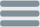

<app-header></app-header>

<mat-sidenav-container id="sidenavContainer" >

    <mat-sidenav mode="side" #sidenav id="sidenav" [class.menuOpen]="isMenuOpen" [class.menuClose]="!isMenuOpen" opened>
    <div class="menu_icon" [class.menu-open]="isMenuOpen" [class.menu-close]="!isMenuOpen">

        <button mat-icon-button (click)="onToolbarMenuToggle()" [ngClass]="status ? 'opennav' : 'closenav'">
            
            
          </button>
    </div>
    <app-sidebar></app-sidebar>
    </mat-sidenav>

    <mat-sidenav-content [ngStyle]="{ 'margin-left.px': contentMargin }">
      <router-outlet></router-outlet>
    </mat-sidenav-content>

</mat-sidenav-container>

<!-- <app-footer></app-footer> -->
